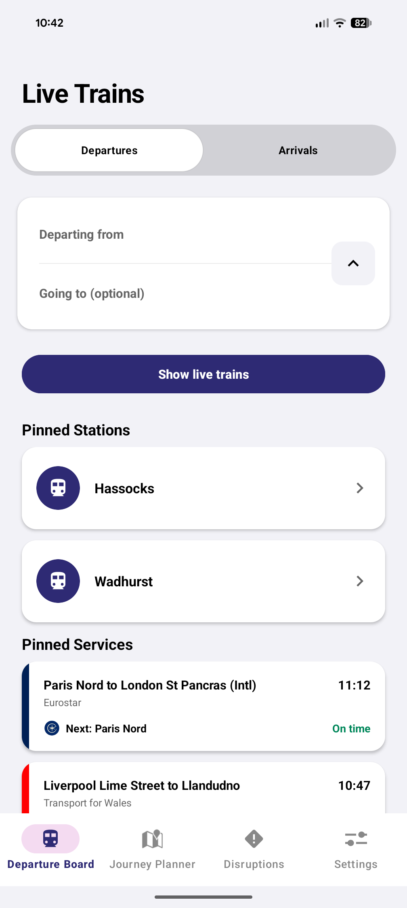

CallingPoint
Your ultimate Android companion for the UK National Rail network. Live departure boards, intelligent routing, and proactive disruption alerts right in your pocket.

Your ultimate Android companion for the UK National Rail network. Live departure boards, intelligent routing, and proactive disruption alerts right in your pocket.
CallingPoint connects directly to the National Rail Data Portal to provide the most accurate, up-to-the-minute data available.

Instantly check live departure times, platforms, and train operators. Pin your frequented stations to the dashboard.

Find direct trains, calculate multi-change routes, and seamlessly map out cross-city London transfers.

Add the CallingPoint widget to your home screen for background updates on engineering works and active incidents.